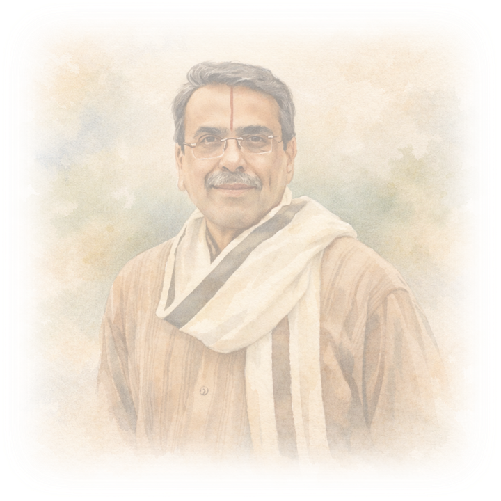

The Maestro
Born in 1955 in Hale Agrahara, Mysore, D. Balakrishna grew up in a household where music belonged naturally to everyday life. His grandfather, Venkatesha Iyengar, and his father, V. Doreswamy Iyengar, served as Asthāna Vidwāns during the reign of Maharaja Krishnaraja Wodeyar, placing the young Balakrishna within a living courtly tradition where music was governed by discipline, proportion, and dignity rather than display.
His earliest musical training began not with the veena, but with the mridangam. Under the guidance of Sri Ayyamani Iyer, a respected mridangam vidwan and a contemporary of Palghat Mani Iyer, he learned to internalise time through structure and restraint. These formative years cultivated a deep familiarity with laya—its balance, anticipation, and measured unfolding—long before melody assumed primacy.
In due course, he returned to the veena under his father's rigorous guidance, entering fully into the Mysore bāṇi. This was a tradition where clarity of swara, repose in phrasing, and firm raga architecture were shaped by bhāva rather than flourish. The discipline of rhythm acquired earlier now settled naturally within melodic form, lending his veena playing an inner steadiness that required no outward emphasis.
Alongside this musical formation, Balakrishna pursued formal academic study, completing advanced training in statistics. This parallel education quietly strengthened habits of structure, measure, and analytical clarity—qualities that later found subtle resonance in his musical approach. A professional career with the Reserve Bank of India followed, during which music continued not as an avocation, but as a sustained discipline carried alongside worldly responsibility.
Beginning in 1973, he accompanied his father extensively in concerts across India and abroad, absorbing the Mysore tradition through proximity, repetition, and long association on stage. Over time, he emerged as an independent performer and a leading representative of the Mysore veena lineage. He is recognised as a top-grade artist of All India Radio and serves as Asthāna Vidwān of the Sri Kamakoti Peetham at Kanchi.
After retiring from professional service, Balakrishna devoted himself fully to music—performance, teaching, and the quiet work of transmission. Through his concerts, pedagogy, and institutional engagements, he continues to sustain a tradition where music is shaped by balance and responsibility, and where lineage remains a lived continuity rather than a historical claim.